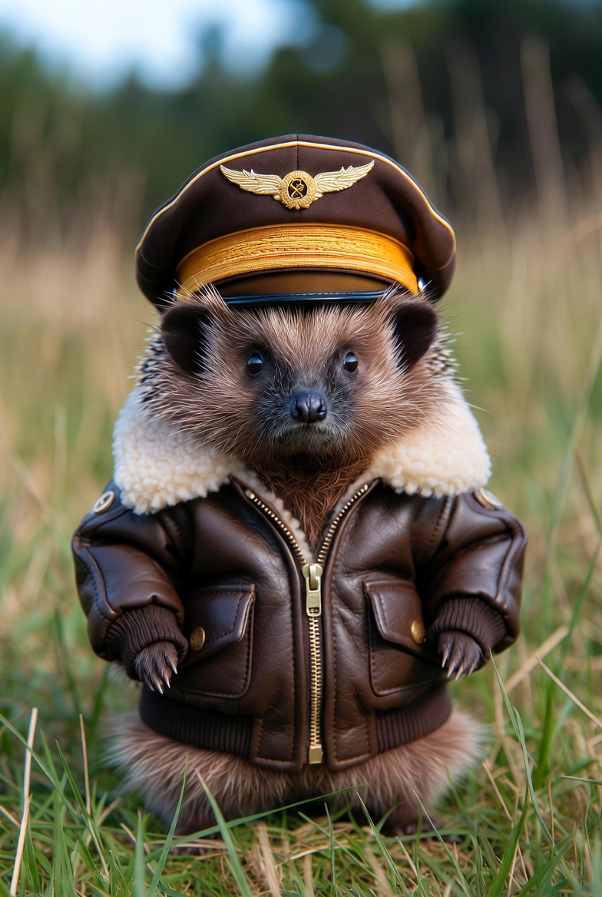

Родился в старом еловом бору под Псковом в 2018 году.
В детстве упал с высокой ветки прямо в кабину списанного учебно-тренировочного Як-52, который использовали как
детскую площадку. Вместо того чтобы испугаться, маленький ёжик три часа сидел в кресле пилота, трогал все ручки
и кнопки и громко шипел «взлёт разрешён!».
В 2022 году его случайно заметили на заброшенном аэродроме местные авиаторы-энтузиасты. Через полгода он уже
самостоятельно выруливал на полосу на сверхлёгком самолёте Savannah, а ещё через год получил свидетельство
частного пилота… с подписью «лапкой» и маленьким отпечатком иголок вместо печати.
Сейчас Ёжик-Штурвал — самый известный нечеловеческий пилот СНГ, обладатель неофициального рекорда «самый
маленький налёт на сверхзвуковом режиме» (на МиГ-29 в качестве пассажира в задней кабине — 47 секунд).
